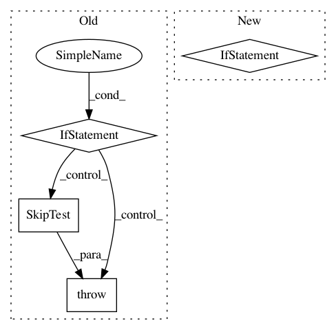

c71cc5b64a9a00926357e705c60b98728f08018b,tslearn/tests/sklearn_patches.py,,check_classifiers_train,#Any#Any#Any#,312
Before Change
@ignore_warnings // Warnings are raised by decision function
def check_classifiers_train(name, classifier_orig, readonly_memmap=False):
// Skip shapelet models
if name in ["ShapeletModel", "SerializableShapeletModel"]:
raise SkipTest("Skipping check_classifiers_train for shapelet models"
" due to convergence issues...")
// Generate some random walk blobs, shuffle them and normalize them
X_m, y_m = _create_small_ts_dataset()
X_m, y_m = shuffle(X_m, y_m, random_state=7)
X_m = TimeSeriesScalerMeanVariance().fit_transform(X_m)
After Change
@ignore_warnings // Warnings are raised by decision function
def check_classifiers_train(name, classifier_orig, readonly_memmap=False):
// Skip shapelet models
if name in ["ShapeletModel", "SerializableShapeletModel"]:
// raise SkipTest("Skipping check_classifiers_classes for shapelets"
// " due to convergence issues...")
X_m, y_m = _create_large_ts_dataset()
else:
X_m, y_m = _create_small_ts_dataset()
X_m, y_m = shuffle(X_m, y_m, random_state=7)
X_m = TimeSeriesScalerMeanVariance().fit_transform(X_m)
In pattern: SUPERPATTERN
Frequency: 3
Non-data size: 4
Instances
Project Name: rtavenar/tslearn
Commit Name: c71cc5b64a9a00926357e705c60b98728f08018b
Time: 2020-05-12
Author: romain.tavenard@univ-rennes2.fr
File Name: tslearn/tests/sklearn_patches.py
Class Name:
Method Name: check_classifiers_train
Project Name: onnx/onnx-tensorflow
Commit Name: 5da838485e42405ca4459912f3e023cf060899a8
Time: 2020-01-10
Author: chhuang@us.ibm.com
File Name: test/backend/test_node.py
Class Name: TestNode
Method Name: test_conv
Project Name: rtavenar/tslearn
Commit Name: c71cc5b64a9a00926357e705c60b98728f08018b
Time: 2020-05-12
Author: romain.tavenard@univ-rennes2.fr
File Name: tslearn/tests/sklearn_patches.py
Class Name:
Method Name: check_classifiers_classes